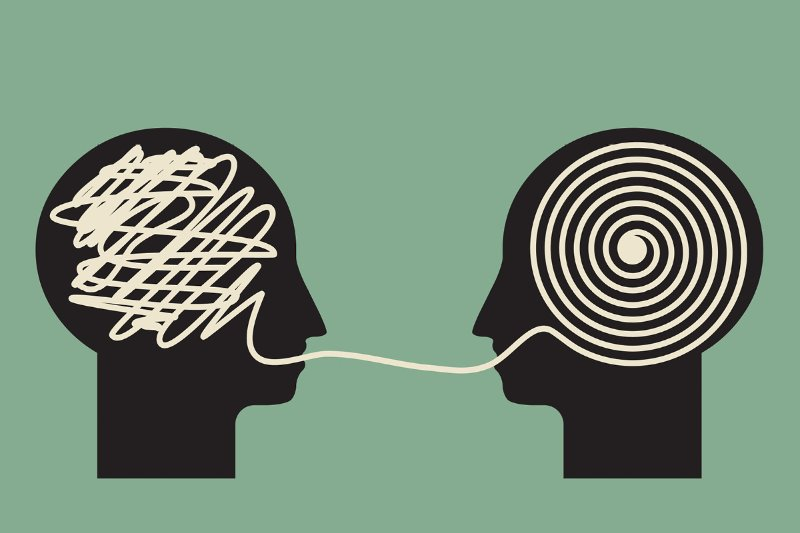
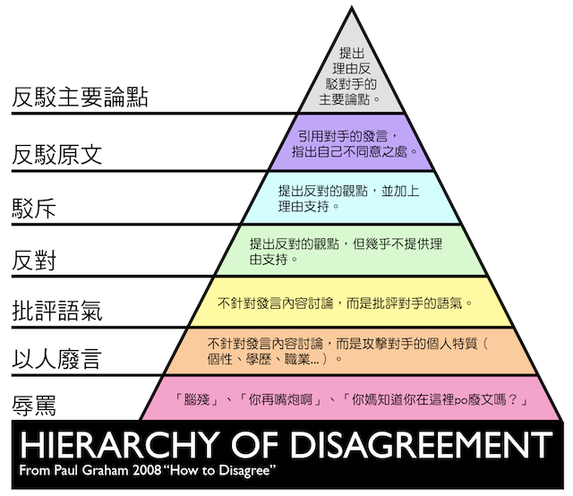

现实生活中我们经常会碰到这样的人或事，就是无论你说什么都他都喜欢反驳一番，或者是你说东他偏要说西。比如下面这样的对话:
甲：我买了本秘密花园，听说能减压。
乙：那东西涂涂眼都花了，还减压呢？
甲：我有朋友最近一直在涂，感觉挺好的。
乙：哎呀，那是人家本来就喜欢画画，画出来也好看，你上微博看看那些完全不会画画的，涂出来跟幼儿园小朋友涂的一样，自己看着血压都要升高了，还减啥压。
甲：我就随便涂涂，本来也不是画家，不好看就不好看呗。
乙：而且你看那东西那么密，咱们上班本来就一直趴着电脑了，好不容易下班了，你还趴着涂，颈椎也受不了啊，别到时候得不偿失。
甲：我就随便涂涂......
乙：你看新闻，有个孕妇涂了血压升高都进医院了呢，你要真想学画，我推荐几本入门书给你，很简单的，画出来也好看，比秘密花园有意思多了。
甲：我就随便涂涂......
甲：咱们小四每天肯定有佣人给他准备咖啡吧。
乙：你怎么知道是佣人给他准备啊？现在有品味的都是自己磨咖啡豆。
甲：小四会每天清晨五点就起床了。
乙：你咋知道他这么早起啊？再说了，他起这么早一天都干啥啊？
甲：小四会拖到最后一天才想起来赶稿。
乙：人家这么有名的作家，肯定不是这样的，一定早早写好了。
甲：我去沃尔玛买下洗发水，学校附近的小超市不放心可能有假。
乙：沃尔玛的也不是什么正品，都有假的。
甲：我的意思是到大型正规的超市买比较放心。
乙：那些超市也有假的，中间商也有造假的，厂家也有假的，都一样。甲：那你平时到哪里买啊？
乙：大润发。
甲：我勒个去。

这些案例中的「乙」们，或许并没有觉的自己的言语有什么不妥之处，相反，可能还认为自己很有批判性思维呢，那么今天我要对这样的人说的就是：醒醒吧骚年，你那只是抬杠，哪里是批判性思维呀？想学真正的批判性思维？请先看了下面的内容吧。
批判性思维的一个要点是：你对外来的信息不能照单全收，要经过自己的「独立」思考，要经过一定的质疑。 但是质疑的方式，会因对象而异。不同的信息，你必须采取不同的质疑方式。甚至有些信息（比如某些「观点陈述」），你是无需质疑的（后面会介绍为什么）。 所以，我们首先要弄清楚的就是什么是「观点」什么是「事实」，如果连「观点」和「事实」都经常搞混淆，又如何能进行正确的质疑呢？所以，区分「观点陈述」和「事实陈述」非常重要。
那么什么是「事实陈述」呢？
顾名思义，「事实陈述」就是把客观事实说出来。 比如「今天健见给各位分享的文章是《你那是抬杠，不是批判性思维》」这就是一个事实陈述。 那么，什么才算「事实」呢？关键看它是不是具有「客观性」。不具有客观性的东西，不能算「事实」。
「事实陈述」有些什么样的特征？
首先「事实陈述」无对错、无好坏。前面说了，「事实陈述」就是把“事实”说出来。而事实本身就不存在所谓的「对错」与「好坏」。所以，如果你去评价某个「事实陈述」的对错，是没有意义的，会显得很荒诞。
其次「事实陈述」有真假。虽然「事实陈述」没有「对错」与「好坏」的概念，但是有「真假」的概念。这个应该好理解。符合事实的，就是「真」；反之就是「假」。
这里要提醒大伙儿注意了（尤其是搞理工科的同学）。很多人喜欢用「非真即假」、「非黑即白」的眼光看问题。在某些理工科领域，或许可以这么干。但是在社会学领域，最好不要这样。因为社会学领域的某些问题，会涉及到「灰色地带」，无法用「非黑即白」的方式判定。
第三「事实陈述」中的「事实」具有可验证性。这里的「可验证性」既包括「证实」，也包括「证伪」。具体来说又可以分为以下三种：
可验证，并且显然的。有些事实属于很容易验证的，并且不易引发分歧。那么，针对这类事实的陈述，很容易就可以判断「真假」。比如2008年奥运会在北京举行。
可验证，但不显然的。比如某人声称自己拥有多少总资产。这个陈述不是很显然，但如果非要查实，多花点力气还是有可能验证的。
不可验证的。还有一些事实，在现有的科技水平上，是无法验证的。 比如发生在久远年代的历史事件细节（除非发明时光机，或者当时正好有外星人到访并留下记录，否则无法验证）。
如果要运用批判性思维，哪些「事实陈述」值得争论呢？刚才提到的三个类型：第一类，通常不需要争论；第三类，即使争论也不会有结果。所以，今后你如果要跟别人争执某个「事实陈述」的真假，先看看是不是属于第二类的。如果不是第二类的，还是省省吧。即使是第二类的事实陈述，也要看是否值得争论。只有性价比足够高的论题，才值得你花时间和精力去争论。
要判断某个「事实陈述」是否可信，办法之一是你亲自去验证。 但是这么干，比较费时费力。而且有的事实陈述，你是不可能亲自去验证的（比如对历史事件的陈述）。 当你无法亲自验证的时候，就得换种方法：分析事实陈述的依据，由此来评估其可信度高不高。
事实陈述的依据，大致可以分为两类。
第一手资料。所谓的「第一手资料」，就是说这个「事实陈述」是通过陈述者的感官直接获得信息。 比如亲眼所见，亲耳所闻。
第N手资料。所谓的「第N手资料」，就是说这个「事实陈述」是从其它途径得到信息，然后再转述的。 如果被转述的对象是第一手资料，那么这个陈述就是「第二手资料」；以此类推。
下面分别介绍两种依据的可信度问题。
第一手资料的可信度。有句老话叫做「耳听为虚，眼见为实」。很多人受到这句老话的误导，以为第一手资料就是可信的，其实未必。当中存在这一个认知偏差问题，所谓的「认知偏差」，就是指「亲眼所见/亲耳所闻」导致的偏差。 比如当你观看魔术表演的时候，虽然是亲眼所见，但看到的依然是假象。因为魔术师可以通过种种方法来诱使你产生认知偏差。除此之外还存在一个陈述者的诚信问题，假如某个人是个老骗子，那么此人陈述的第一手资料，可信度就要打个折扣。
第N手资料的可信度。评价第N手资料的可信度，需要同时考虑两方面： 首先，第N手资料需要依赖于第一手资料的可信度。如果被依赖的第一手资料有问题，那衍生出来的第N手资料也好不到哪里去。 其次，信息转手的次数越多，信息的衰减通常会越严重。
关于「事实陈述」以及如何对「事实陈述」运用批判性思维，我们就先说到这里，接下来看看什么是「观点陈述」。
简单地说，就是陈述自己主观的一些东西。「观点」和「事实」最大的不同就在于，「观点」受主观影响的，而「事实」不受主观影响。
「观点陈述」可以分为以下两类：
无需思考，得出的观点。
这类观点陈述，比较常见的有：感官体验、价值观偏好。 感官体验，直接来自于人的动物本能，得出这类观点是不用经过大脑的，类似于条件反射。 价值观偏好，主要来自于每个人的生活习惯、家庭环境、文化背景、等等，一旦形成了某种价值观偏好，就如同思维定式一般，作出评价也是不经过大脑的。 举例说明： 今天很热（感官体验） ；喜欢喝XX饮料（价值观偏好）。
经过某种思考，得出的观点。
思考的方式有很多种： 最不靠谱的，就是完全靠猜测（拍脑袋），然后得到某个主观臆断。 好一些的方法还有： 依靠归纳法，总结出某个结论。 依靠演绎法，通过逻辑推理得到某个推论。
「观点陈述」有啥特征呢？
对于「感官体验」的观点，完全不存在「真假」、「对错」、「好坏」。 比如同一时间同一地点，有人会觉得温度高，有人觉得温度低。你不能说某个人是对的，另一人是错的。
对于「价值观偏好」的观点，如果「价值观偏好」纯属私人领域，就跟「感官体验」类似，也没有「真假」、「对错」、「好坏」之类的说法。 比如喜欢什么颜色的服饰、喜欢什么口味的食物、等等。 但是，对于涉及到公共领域（比如政治领域、道德领域）的「价值观偏好」，就会有「好坏」之分。如果某个价值观在不同的历史时期、不同的文化中，都得到赞美，那么就可以称之为是好的；反之，都遭到批评就称为坏的。 不过，能称得上「好的」价值观不多，能称得上「坏的」价值观也不多。大部分公共领域的价值观，都处于中间的灰色地带。这些价值观，可能在某些历史时期或某些文化中被赞同，而在另外的历史时期或另外的文化中，被排斥。比如「性取向的问题」就属于这种中间的灰色地带。
对于「经过思考得出的观点」，这类观点，也会有「对错」之分。因为思考的过程是有可能出现偏差和谬误的。 比如，用演绎法进行推理的时候，可能会出现推理的逻辑谬误。 比如，用归纳法进行总结的时候，样本的片面性会导致结论的片面性。
哪些「观点陈述」值得质疑和争论呢？
通过上述的分析，大伙儿应该比较清楚了：对于「感官体验」和「私人领域的价值观偏好」，质疑是没有意义的、争论是没有结果的。 可惜的是，很多网民非常热衷于这类争论。比如：不同明星的追星族会互相争论、不同球队的球迷也常互相争论、甚至不同品牌手机的粉丝也会互相争论。
对于「经过思考得出的观点」，这方面是可以进行质疑和争论的。但要注意两点：
1. 要考虑性价比——不要花太多时间和精力去质疑和争论一些鸡毛蒜皮的细节 。
2. 反驳别人的观点要讲究境界。
最后关于第二点提到的「境界」，可以参考保罗格雷汉姆的文章《How to Disagree》中采用的模型，将反驳分为7个层次：辱骂、针对人、针对语气、反对、驳斥、驳斥原文、反驳论点。

好了，看到这里，大家应该能区分抬扛和批判性思维了吧？